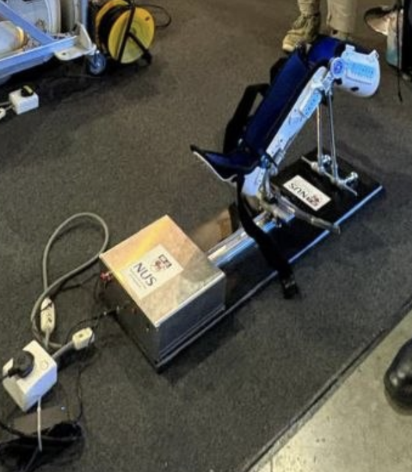
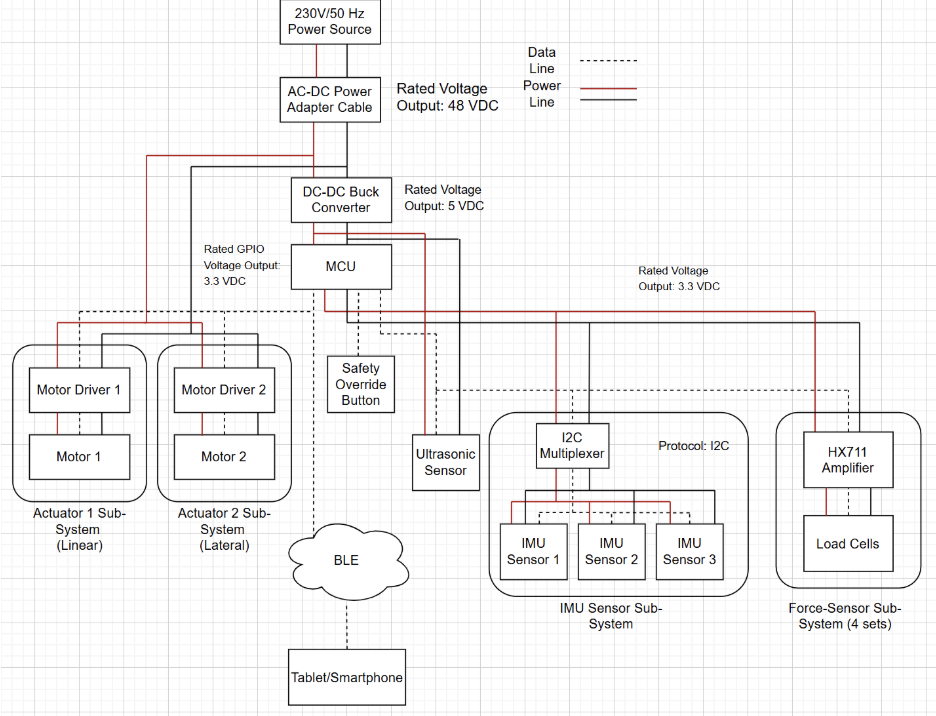
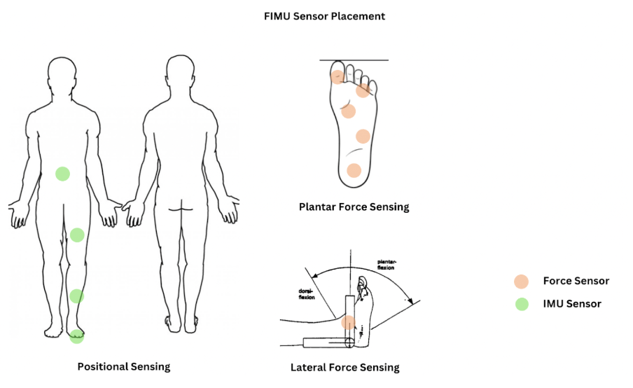
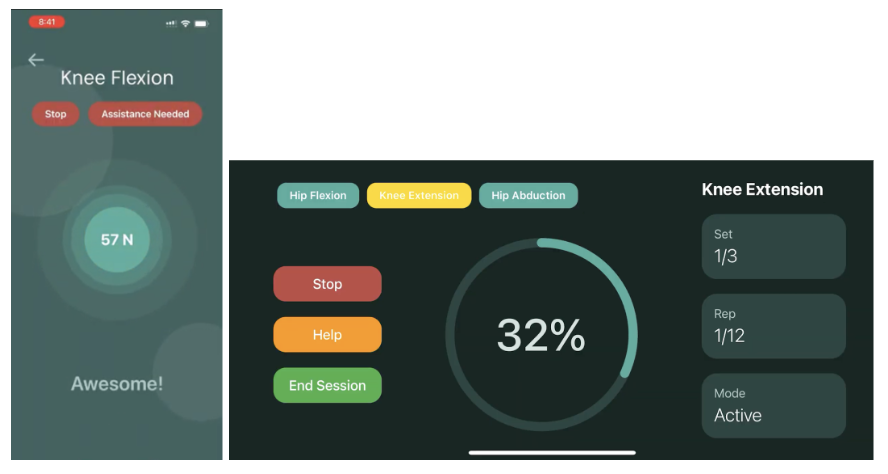
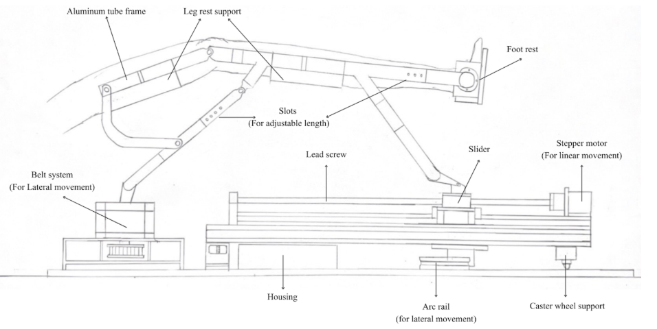
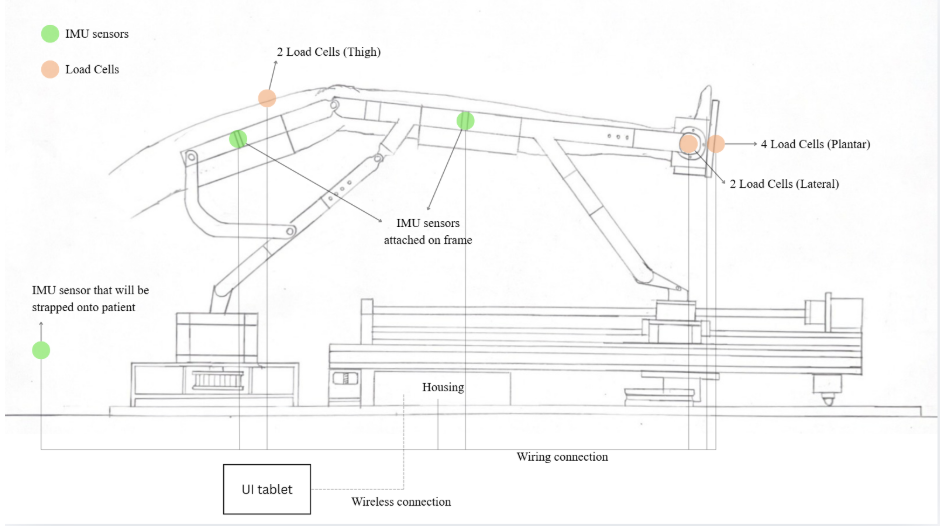
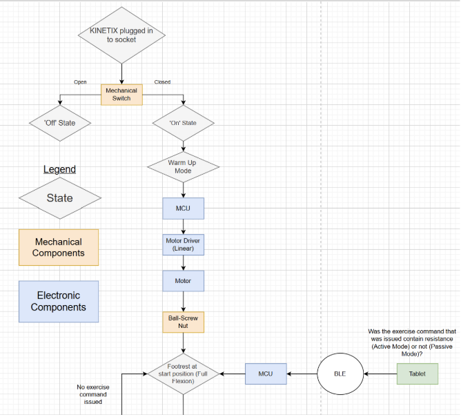
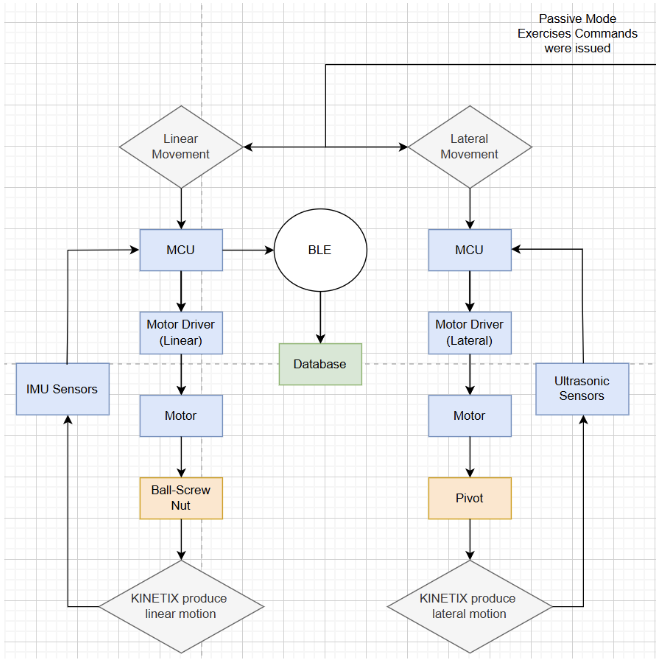
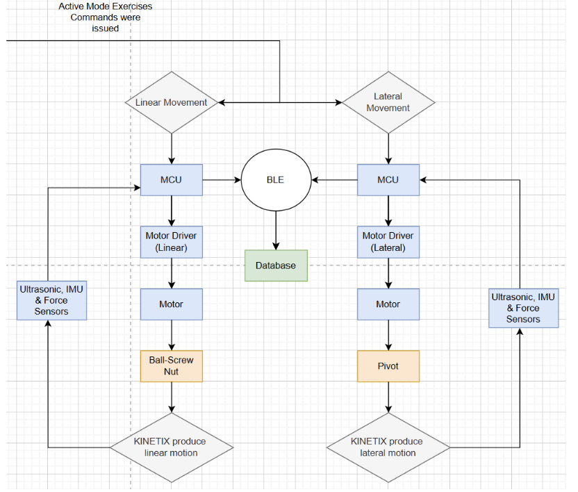
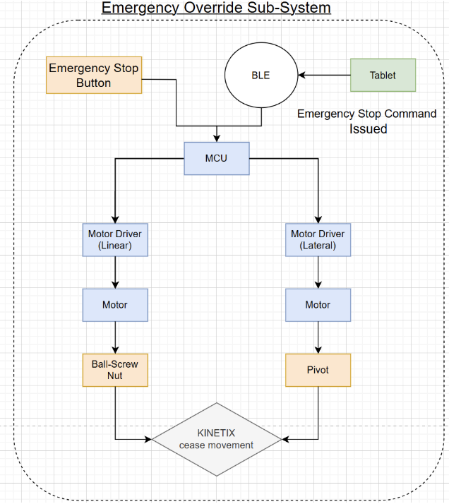

This chapter covers the mechanical, electrical, sensing, and user interface design decisions made during the development of Kinetix, culminating in a proposed system overview and boot sequence.
3.1 Mechanical Design
The mechanical design aspects encompass the earlier designs' inspiration, initial sketches, and the sub-assemblies of the device. Mechanism comparisons also present as a helping guide to find the suitable mechanism in respect to the design specification.

Figure 5. Sketch of Mechanical Design Iteration 1
This design (Figure 5) is based on the initial design from the UROP design (Figure 6) which one of our members contributed towards, working as one of the iterations for the development of Kinetix.

Figure 6. UROP Mechanical Structure
3.2 Electrical Design
While the full evaluation criteria, component comparisons, and circuit schematics are documented in the Interim Report, this section summarises the scope of the electrical subsystem.
Motor Selection
NEMA 23 Bipolar Stepper Motor (3.0 Nm) was selected for the following reasons:
- Large holding torque
- High torque at low speeds
- Simple open-loop control, avoiding jitter seen in closed-loop systems under static loads
Microcontroller Selection
Raspberry Pi Pico W2 was selected for the following reasons:
- Strong price-to-performance ratio
- Compact form factor
- Bluetooth Low Energy (BLE) support
The full electrical schematic can be found in the Interim Report; a simplified version is included below for ease of reference.

Figure 7. Simplified Electrical Schematic Diagram. The tablet application communicates with Kinetix via BLE and serves as the primary interface for the physiotherapist to configure the patient's exercise.
3.3 Sensing Design Concepts
Three sensing design concepts were evaluated against various criteria including force sensing placement, positional sensing capability, output quality, ease of set-up, and clinical feasibility:
- FIMU — IMU and force sensor concept
- HFF — Hall-Force-Flex concept
- Computer Vision concept

Figure 8. FIMU sensing concept.
3.4 UI Design Concepts
The UI went through two major iterations before reaching its current form.
Iteration 1 — Dual-View UI
The first iteration featured a two-view interface enabling both physiotherapists and clients to access the platform independently. Feedback indicated a need for a therapist-focused interface, removal of calendar and session-logging features, and the introduction of gamification to improve client engagement.
Iteration 2 — Therapist-Led UI
The second iteration introduced a five-stage structured workflow and a rotated "During Session" display providing real-time visual feedback and gamified progress cues for the client. The platform was also reconfigured from a general mobile application to a tablet-specific interface to reflect the clinical context — a supervised rehabilitation session rather than independent patient access.
Full user flow diagrams and further details are documented in the Interim Report.

Figures 9 & 10. UI design iterations — Dual-View UI (left) and Therapist-Led UI (right).
3.5 Proposed System Overview
The final sketches below show the proposed design for Kinetix. They provide an overview of the main components and display the sensor placements around the device, including the UI for the tablet.

Figure 11. Proposed system overview — main components

Figure 12. Proposed system overview — Sensor and tablet UI placement
3.6 System Block Diagram
Once the device is turned on, a warm-up sequence must be initiated to prepare the device for use before a session plan is started.

Figure 13. Kinetix boot-up sequence.
Passive Mode
In passive mode, the motor drives the footrest along the screw bar for horizontal motion and rotates the pivot for lateral motion. An ultrasonic sensor tracks the footrest's position during lateral movement. Meanwhile, IMU sensors track the joint angles of the user throughout the session.

Figure 14. Kinetix passive mode sequence.
Active Mode
In active mode, the key addition is force sensing — by setting a resistance threshold the user must overcome, while recording the exerted force for progressive overload and progress tracking. The IMUs in both modes monitor range of motion, providing further data on the user's rehabilitation performance.

Figure 15. Kinetix active mode flowchart.
Emergency Override
In case of emergencies, there are both physical and software overrides for the device to enable the user to dismount safely and prevent the risk of injuries.

Figure 16. Kinetix emergency override sequence.